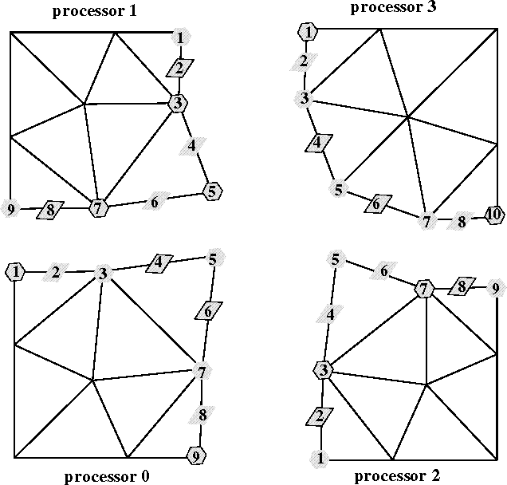

A full range of processor neighborhood adjacency information
can be queried from PMDB. These involve adjacent processors based
on entity connectivity, lists of partition boundary entities and
addresses of (links to) identical entities on other processors.
Figure  shows an example mesh which is used to
illustrate the output of the query routines described below.
The entity numbers shown are addresses of entities in actual implementation.
shows an example mesh which is used to
illustrate the output of the query routines described below.
The entity numbers shown are addresses of entities in actual implementation.

Figure: Example used for illustrating the query operators for
partition boundary entities
PMDB allows two modes of links. In full link mode, all partition
boundary entities store links to identical entities on holder processors.
In compressed or minimal link mode, only entities who cannot
derive their adjacency from higher dimensional entities store links to
other identical entities. Substantial memory can be saved
when links are compressed. The routines for compressing and uncompressing
links are described in Section  . Depending on the
modes of links, the operators described below give different output.
We illustrate these in the examples below.
. Depending on the
modes of links, the operators described below give different output.
We illustrate these in the examples below.
int pmdb_proc_adj( pMeshPB pmeshpb, /* IN */ eType etype, /* IN */ int ith) /* IN */
This routine returns the
ith=0.. pmdb_num_procs_adj()-1
neighbor processor id
based on the passed connectivity Tvertex or Tedge or
Tface. Return values for calls corresponding to
mesh in the above Figure are:.
| on processor 0 | full links | minimal links |
| pmdb_proc_adj(..,Tvertex,0) | 1 | 1 |
| pmdb_proc_adj(..,Tvertex,1) | 2 | 2 |
| pmdb_proc_adj(..,Tvertex,2) | 3 | 3 |
pEntity pmdb_all_next_en( pMeshPB pmeshpb, /* IN */ eType etype, /* IN */ void **temp) /* IN/OUT */
This routine traverses all the entities on the boundary of the partition.
| etype | type of partition boundary entities traversed |
| temp | temporary variable which should be set to null before entering traversal. |
Traversal for calls corresponding to mesh in the above Figure.
| on processor 0 | full links | minimal links |
| pmdb_all_next_en(..,Tvertex,..) | 1,3,5,7,9 | 5 |
| pmdb_all_next_en(..,Tedge,..) | 2,4,8,6 | 2,4,8,6 |
int pmdb_en_has_iplink( pEntity item, /* IN */ int pid, /* IN */ pEntity *offptr) /* OUT */
This routine is used to check whether a given entity is on the
partition boundary and whether it is shared with processor pid.
| item | address of the entity. |
| pid | processor id. |
| offptr | address of the shared entity on processor pid. |
The routine returns the following:
| -1 | if entity is not on the boundary. offptr is returned as null. |
| 0 | if entity is on a boundary but does not have links in compressed (minimal link) mode, or does not have a link to this specific pid. offptr is returned as null |
| 1 | if entity is on the boundary and has links to processor pid. offptr contains the address of shared entity on processor pid |
void pmdb_en_iplink( pEntity loc_entity, /* IN */ int ith, /* IN */ int *pid, /* OUT */ pEntity *off_entity) /* OUT */
This routine traverses the list of links of a partition boundary entity.
| loc_entity | the local entity whose links are traversed. |
| ith | ith=0..pmdb_en_num_iplinks()-1 |
| pid | processor id returned. |
| off_entity | the address of the shared entity on processor pid returned. |
Returned ( pid,off_entity) pairs for calls corresponding to mesh in the above Figure.
| on processor 0 | full links | minimal links |
| pmdb_en_iplink(5,0,..) | (1,5) | (3,5) |
| pmdb_en_iplink(5,1,..) | (2,5) | N/A |
| pmdb_en_iplink(5,2,..) | (3,5) | N/A |
int pmdb_en_num_iplinks pEntity entity) /* IN */
This routine returns the number of links an entity has.
The number of links
returned has these interpretations:
| < 0 (negative) | entity is not on partition boundary. |
| = 0 | entity is on boundary but have no minimal inter-processor links. |
| > 0 (positive) | number of links, entity is on the partition boundary |
If full links are used, then the second case (=0) is never returned. This case is returned only if the links has been compressed to minimal links. For the example mesh, pmdb_en_num_iplinks(5) will return 3 under full link mode and 1 under minimal link mode on processor 0.
void pmdb_get_owner( pEntity entity, /* IN */ int *owner_pid, /* OUT */ pEntity *owner_entity) /* OUT */
This function returns the ownership information of the entity.
| entity | entity whose ownership is requested. |
| owner_pid | owner processor id returned. |
| owner_entity | owner entity address returned. |
The entities which have outlined boundaries in the example Figure a.1 indicate the ownership. pmdb_get_owner(5,...) will return the pair (1,5).
int pmdb_is_en_on_pb( pEntity entity, /* IN */ int pid, /* IN */ pEntity *offptr) /* OUT */
This function returns 1 if entity is on the partition boundary
adjacent to processor with id given by the parameter pid. The
variable offptr is assigned the address on the processor pid
on return in this case.
If the entity is not on the partition boundary, then this routine returns
0 and offptr contains null on return.
int pmdb_is_owner( pEntity entity) /* IN */
This function returns 1 if the processor is the owner of the entity. Otherwise, it returns 0.
int pmdb_linked_num_procs( pMeshPB pmeshpb, /* IN */ eType etype) /* IN */
This function returns the number of adjacent processors based on
the passed connectivity etype of Tvertex or Tedge or
Tface.
If full links are used, the output of this function is the same as
pmdb_num_procs_adj
. If however,
links have been compressed with
pmdb_compress_links
to minimal
representation, then the output is different. Only, processors based on
minimal link adjacency is returned.
int pmdb_linked_procid( pMeshPB pmeshpb, /* IN */ eType etype, /* IN */ int ith) /* IN */
This routine enumerates the processor ids of adjacent processors based
on the etype (Tvertex,Tedge,Tface) connectivity. The parameter
ith takes on the values
0.. pmdb_linked_num_procs
-1.
This operator has similar functionality as pmdb_proc_adj. For the
example mesh:
| on processor 0 | full links | minimal links |
| pmdb_linked_procid(..,Tvertex,0) | 1 | 3 |
| pmdb_linked_procid(..,Tvertex,1) | 2 | N/A |
| pmdb_linked_procid(..,Tvertex,2) | 3 | N/A |
long pmdb_num_all_pb_en( pMeshPB pmeshpb, /* IN */ eType etype) /* IN */
This function returns the number of entities of type
etype=Tvertex or Tedge or Tface on
the partition boundary.
| on processor 0 | full links | minimal links |
| pmdb_num_all_pb_en(..,Tvertex) | 5 | 1 |
| pmdb_num_all_pb_en(..,Tedge) | 4 | 4 |
int pmdb_num_procs_adj( pMeshPB pmeshpb, /* IN */ eType etype) /* IN */
This function returns the number of adjacent processors based on
the passed connectivity etype of Tvertex or Tedge or Tface.
Whether the links have been compressed with
pmdb_compress_links
or not,
the processor adjacency assumed and returned by this function is based on
full links.
If adjacency based on minimal (compressed) links are required,
then
pmdb_linked_num_procs
should be used.
long pmdb_owned_num_pb_en( pMeshPB pmeshpb, eType etype)
This function returns the number of owned entities of etype= Tvertex,
Tedge or Tface on the partition boundary.
pEntity pmdb_proc_next_pb_en( pMeshPB pmeshpb, /* IN */ eType etype, /* IN */ int ith, /* IN */ void **temp) /* IN/OUT */
This op traverses the entities on the boundary of the
partition adjacent to the processor indexed by
ith=0..
pmdb_linked_num_procs
-1.
long pmdb_proc_num_pb_en( pMeshPB pmeshpb, /* IN */ eType etype, /* IN */ int ith) /* IN */
This function gives the number of entities of etype on
the partition boundary adjacent with the ith adjacent
processor, i=0.. pmdb_linked_num_procs. To
traverse the entities themselves use: pmdb_proc_next_pb_en .
long pmdb_glob_en_num( pEntity entity /* IN */ )
If global numbers have been generated for the entities by pmdb_dref_numb_own_gen , then this routine can be used to query the global number of any entity. The entity numbers start with 1 and not with 0.
void pmdb_check_links( pMeshPB pmeshpb) /* IN */
This routine can be used to check the correctness of the
links and the distributed mesh. It is provided as a debugging aid and
should be used by applications who modify PMDB data structures by
the update routines which were described in Section  .
.